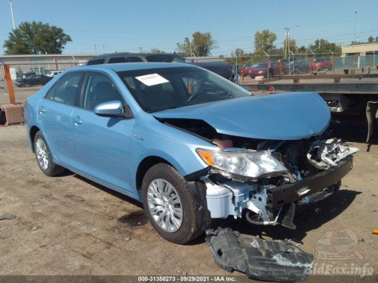

This Lab experiments with Javascript data types and variables.
One of the challenges is picking out a car, considering our main transportation is the bus, and we didn't know the make/model of the Santa Cruz Metro Bus. We settled on a Light Blue 2012 Camry.
We did not encounter any major problems. Lab 6 was very similar to Lab 5 so it was easy for us to complete it.
Here are the results of our modes of transportation and car details: